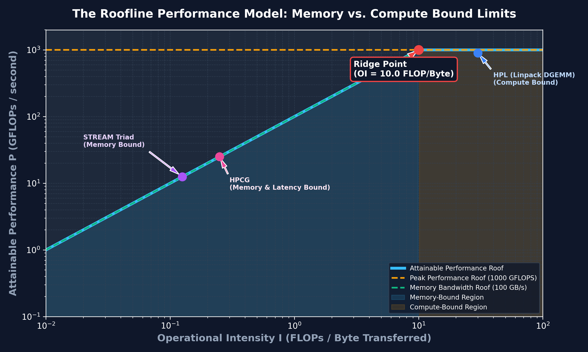

Benchmarking Fundamentals: Rpeak vs. Rmax
Theoretical peak performance (Rpeak) represents the absolute upper mathematical bound of hardware floating-point speed. Achieved performance (Rmax) is measured using High Performance LINPACK (HPL), providing the efficiency ratio (Rmax / Rpeak).
Standard Benchmarks: HPL, HPCG & STREAM
HPL measures dense linear algebra FLOP performance, HPCG evaluates sparse matrix conjugate gradient solves (memory bandwidth bound), and STREAM quantifies main memory bus bandwidth across Copy, Scale, Add, and Triad operations.
The Roofline Performance Model
The Roofline model visually plots attainable performance against Operational Intensity (FLOPs / Byte Transferred), delineating Memory-Bound code from Compute-Bound code.

Profiling & Compiler Optimization Flags
Use Linux perf stat to sample hardware counters and GCC optimization flags (-O3 -march=native -ftree-vectorize) to enable SIMD vectorization and maximize instruction throughput.